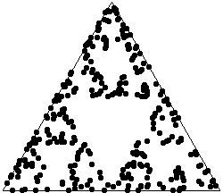

|
 |
Purpose To use Random IFS to illustrate an interesting property of random sequences of numbers
Material Triangle template, about 12 overhead transparencies, a die (singluar of dice), adhesive tape, a ruler with cm scale, a permanent marking pen, an overhead projector to display the data.
Conclusion The superposition of several short runs of the chaos game is at least visually indistinguishable from a longer run.